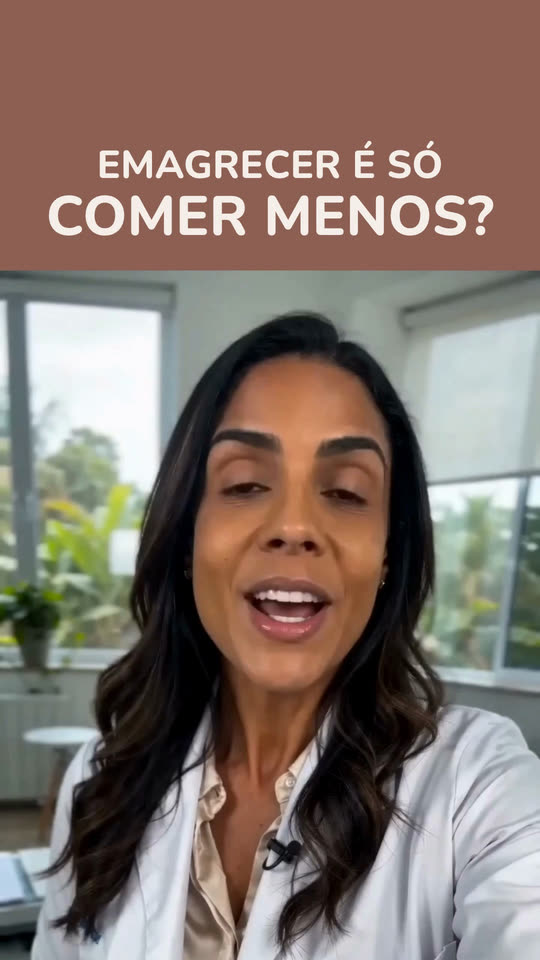
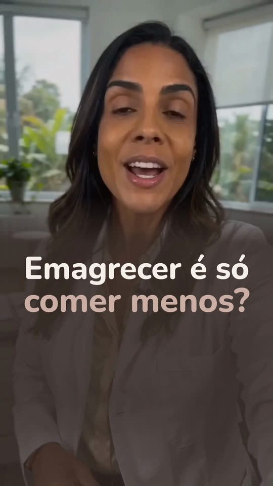
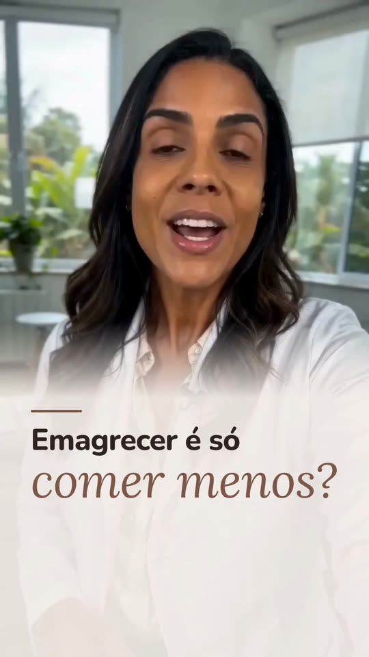

Editor Chefe: estilos e capas
Na conversa com o Claude, você escolhe o estilo do seu vídeo pelo número. Estes são os seis. Nos estilos de 1 a 5, você ainda pode pôr um gancho de capa nos primeiros segundos: veja as três capas mais abaixo. No 6, a própria caixinha faz esse papel. Personagens fictícias criadas por inteligência artificial.
-
1 Legenda viva
3 ou 4 palavras por vez, a palavra falada em destaque.
-
2 Palavra-chave
só a palavra forte de cada frase, grande na tela.
-
3 Corte seco
sem pausas, enquadramento alternando a cada frase.
-
4 Painel escuro
fundo escuro, cartões de informação, legenda em caixa.
-
5 Editorial claro
fundo claro, a pessoa num cartão, uma palavra por vez.
-
6 Caixinha de pergunta
a pergunta numa caixinha igual à do Instagram, o vídeo inteiro, com a legenda embaixo.
Amostras de 8 segundos, sem som. Personagens fictícias criadas por inteligência artificial.
Capas
O gancho de capa é uma frase curta, de até 8 palavras, escrita na tela nos primeiros 3 segundos do vídeo, por cima da imagem. Vale para os estilos de 1 a 5 e é opcional (no 6, a caixinha já é a capa). Na conversa com o Claude, você escolhe a capa pelo número, e a palavra forte da frase ganha destaque.
-

1 Faixa
tarja na cor de destaque no topo, frase em letras maiúsculas, o vídeo logo abaixo.
-

2 Manchete
frase grande sobre o vídeo, abaixo do rosto, com o fundo escurecido por baixo.
-

3 Editorial
fundo clareado embaixo, frase com a palavra forte em itálico.
Primeiro quadro de vídeos editados com cada capa. Personagem fictícia criada por inteligência artificial.